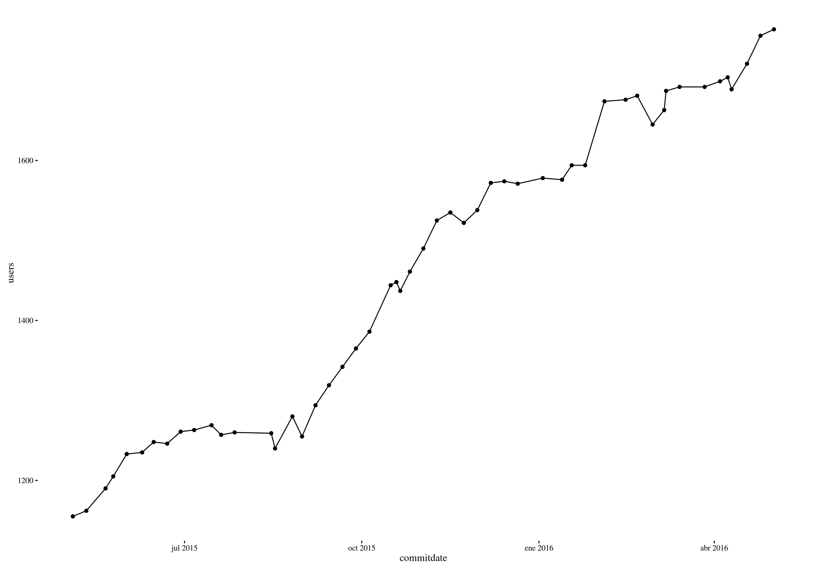

Comunidades de desarrollo de software
libre
El caso de Granada
@jjmerelo|@oslugr
git
2


3
Parchea, parchea
4
Saraos
5 → GitHub es una forma de vida
7 → Predica activamente
pull, commit...
wait for it
push
Grupo de Telegram OpenSouthCode
Enviar nick a @makova